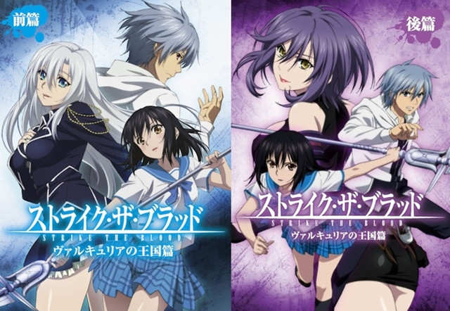
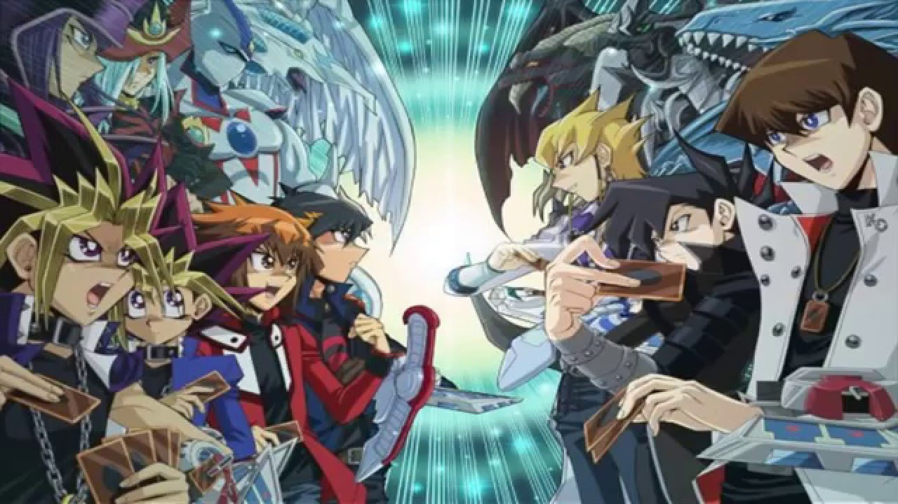
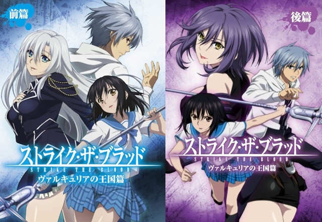
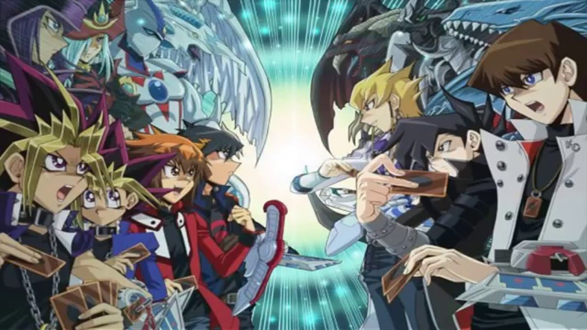
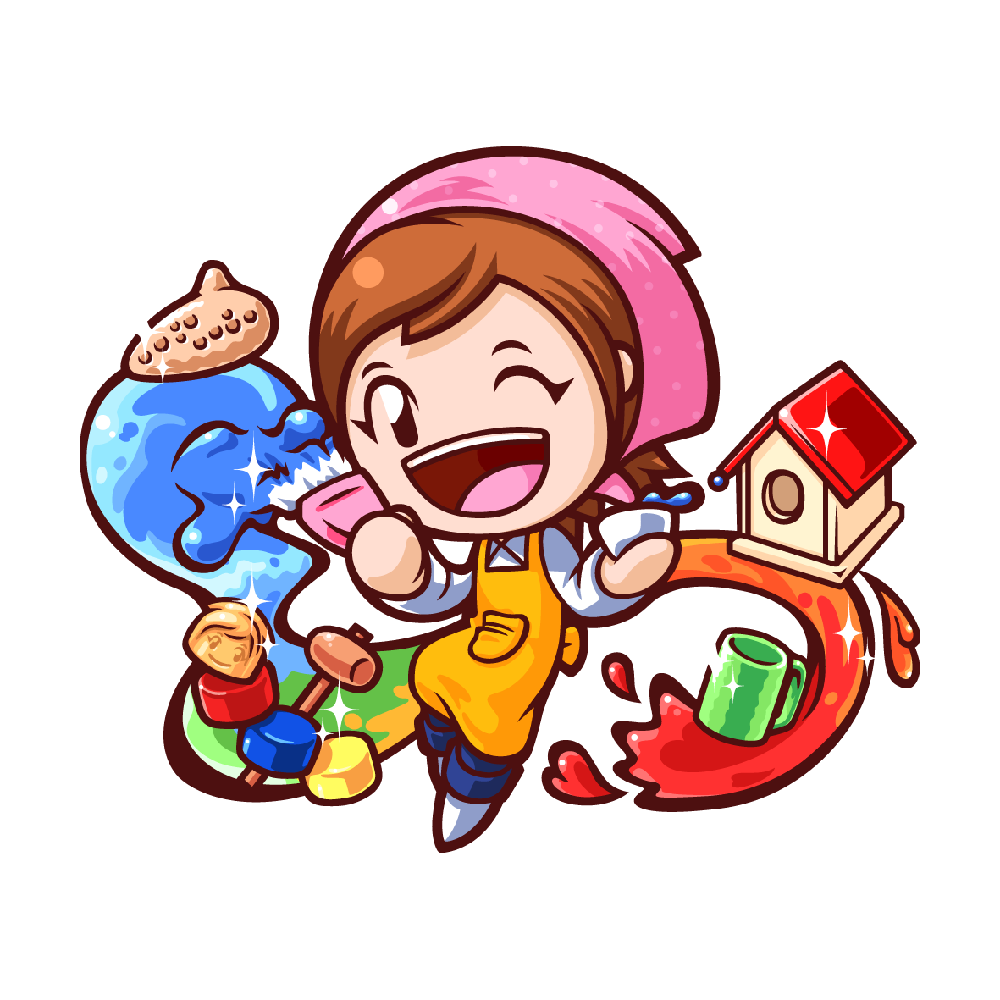
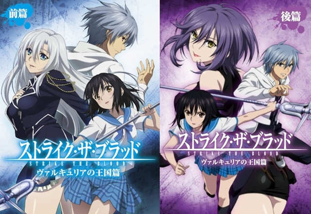
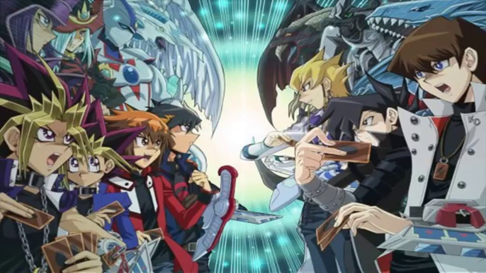

Op deze pagina ga ik het over mijn hobbies hebben.
Ik heb dit gedaan in kopjes, dus per kopje gaat het over één van mijn hobbies.
Ik ga het onder andere hebben over tekenen, computer spelletjes spelen en tot slot sporten.
|  |
Op jonge leeftijd begon ik al met tekenen en sinds dien heb ik het altijd leuk gevonden.
Ik tekende als kind eerst altijd in een cartoon achtige stijl.
Toen ik naar de eerste ging begon ik pas echt tekenen met anime.
Weet je niet wat anime is? Geen zorgen ik leg het wel eventjes uit. Anime is eigenlijk simpelweg een geanimeerde versie van een japanse strip.
Nou nu we dat weten zijn hier een paar voorbeeldjes van anime en tot slot één kort fimpje.
|


|
Het spel wat ik het allerlangst heb gespeeld is League of Legends.
Voordat ik ga beginnen met de het praten over dit spel zeg ik alvast
dat de Game Gratis is.
Je hoeft niks te betalen bij het downloaden en het spelen van de game.
Zoals bij elke game kun je wel extra's kopen zodat je meer of sneller, beter
in het spel kan worden.
Gefeliciteerd je hebt de onderkant van deze pagina bereikt, BACK TO THE TOP!